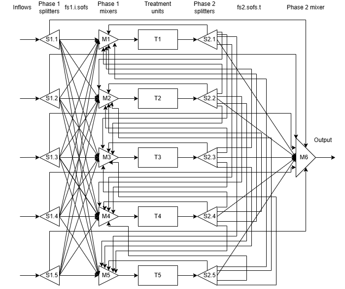

Research and coursework from the M.S. in AI Engineering–Chemical Engineering. The research software is
unreleased, so I share results only, not code.
Graduate research · Kitchin Research Group, CMU · Feb 2026–present
Differentiable flowsheets: rare-earth separation and refinery optimization
I'm testing a JAX-based, fully differentiable sequential-modular flowsheet library (unreleased) on real process
problems. Because the whole flowsheet is differentiable, optimizers get exact end-to-end gradients instead of finite differences.
- Rare-earth separation (Gd from Y/Ho; 10-stage extractor and 15-stage scrubber with PC88A; 4 decision variables).
I reformulated the problem to remove non-convex and flat regions and switched from gradient-free Powell to gradient-based SLSQP.
That lifted the two product purities from 86% / 86% to 98.7% / 90.5%, and SLSQP converged in 2–5 min where trust-region took 20 min without converging.
- Runtime: a better initial guess for the recycle solver plus restricting the search to the non-flat operating range cut simulation time by more than 50%.
That made it practical to generate a 20,000-point training set overnight.
- Surrogate: a two-headed neural network (shared 32→32 layers, one 16-node head per purity) reached validation
R² ≥ 0.9994 on both outputs, and a larger version reached 0.9999. It runs hundreds of thousands of evaluations per second. It beat two
separate networks of the same size, and oversampling the optimal region recovered usable accuracy from only 3,100 points.
- Benchmark against Aspen HYSYS on a naphtha hydrotreater. Most stream and temperature results matched within 0.01–5%, and the flowsheet
converged in 0.13 s vs 0.3 s. On a CAPEX + OPEX sizing problem, gradient-based SLSQP reached the same optimum as Powell 27× faster (1.2 s vs 32.6 s).
98.7%Gd purity (from 86%)
>50%faster simulations
R² 0.9999neural-net surrogate
JAXAutomatic differentiationSciPy optimizationPyTorch surrogatesAspen HYSYSSolvent extraction

Process Systems Modeling · Spring 2026 · individual, self-proposed project
Water-treatment network design as an MINLP
I designed a network that routes five contaminated water streams (four contaminants) through up to five treatment units at minimum cost.
I wrote my own concentration-based formulation in GAMSPy, using a superstructure of splitters and mixers, binary unit selection with big-M
constraints, and economies-of-scale capital cost. It selects two units and reaches US$348,337. That matches the published
optimum for the benchmark, which the reference reached with different formulations.
GAMSPyMINLPSuperstructure optimization
Advanced Process Systems Engineering · Spring 2026 · individual project
Crude-oil scheduling as a continuous-time MINLP
I formulated and solved, in GAMS, a refinery crude-oil pooling and scheduling problem: vessels unload to storage tanks, which feed charging tanks, which feed the distillation units.
The model sets the timing of every transfer under blending, capacity and changeover constraints to minimize cost.
The optimum came to US$221k, and changeovers drove 45% of it. Sensitivity runs on vessel arrival, changeover cost, demand and tank capacity showed how tightly constrained the network is.
GAMSMINLPScheduling
Introduction to Deep Learning · Spring 2026 · team of 4
Sparse-to-dense LiDAR completion
We pre-trained a masked-autoencoder vision transformer on nuScenes LiDAR, then fine-tuned it with pseudo-depth from the VGGT foundation model and a surface-normal consistency loss.
Adding that loss roughly halved Chamfer distance compared with the pre-trained model (0.197 → 0.105 m). We also documented where camera conditioning hurt accuracy, and why.
PyTorchVision transformersSelf-supervised learning
Systems & Toolchains for AI Engineers · Fall 2025
End-to-end data pipeline: PostgreSQL → Spark → Kafka → cloud
I loaded 8 years of FIFA player data (about 144k records) into a PostgreSQL schema, aligning columns that changed between years, and wrote
parameterized Spark analytics on top of it. I also streamed live YouTube comments through a Kafka producer and consumer, and redeployed the
pipeline in the cloud. A tuned Spark linear-regression model predicted player rating with an RMSE of about 2.3 on the 1–99 scale. The repository is private by course policy.
PostgreSQLPySpark / Spark MLKafkaCloud deployment